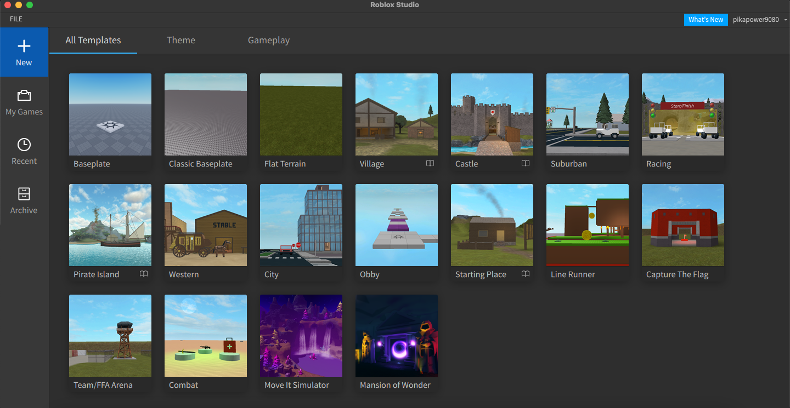

Keep in mind! From this part forward in this lesson, if you're reading in the future many things WILL be out of date! Most of the time it's only a little bit different and you can find a workaround. Also, much of the scripting stuff probably won't change. Also, I'm calling the things that you make and other people play games even though Roblox is going through their "experiences" phase. If it's called experiences for you and I say games just know what I mean

By now, you should have a page that looks something like this, give or take a template. Templates are a great place to learn when you're starting out as they can have scripting things for you to complete, and they can make you feel good about it too! Let's go ahead and click on the starter place template. If roblox went crazy and updated it, you can download the version I'm using here
Ok, now you've set up your place and everything, let's get into the real scripting.